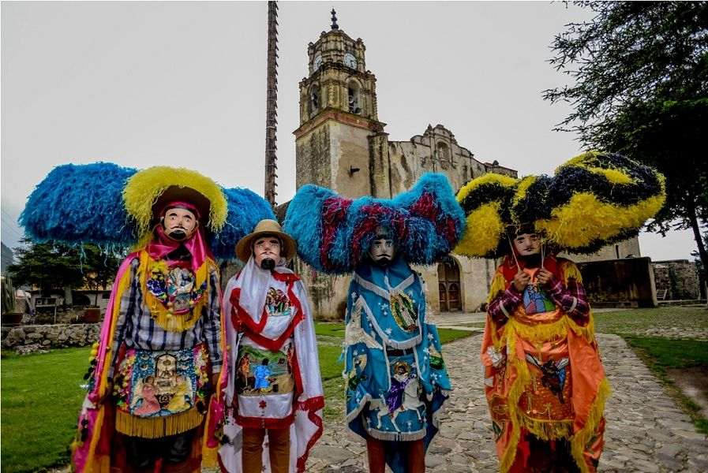
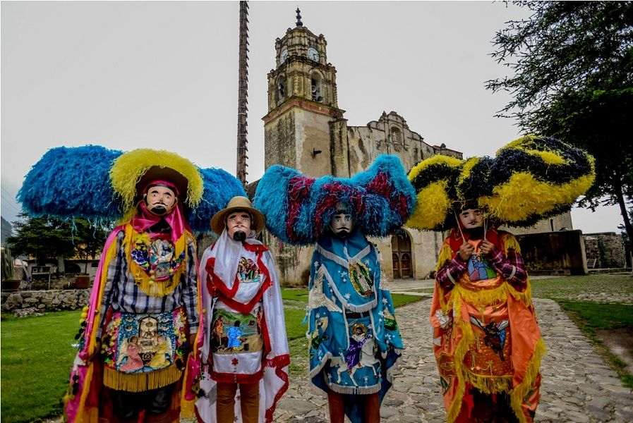
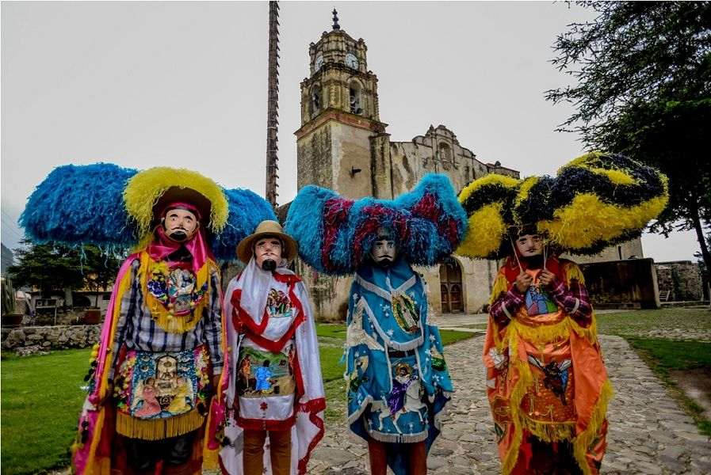

Proviene de la raíz nahuatl: Tetella o Tetetla, cuya etimología te-tl: "piedra", tla-n: "lugar" que denota abundancia y quiere decir "Lugar donde hay muchas piedras o pedregal".
En la época prehispánica Tetela del Volcán fue asentamiento de grupos descendientes de los Olmecas xicalancas que habitaron las faldas de la cierra nevada. Al desintegrarse el imperio tolteca se presentaron las migraciones de grupos que llegaron del valle de México, desplazando a los Olmecas a lugares mas allá de la sierra madre.
